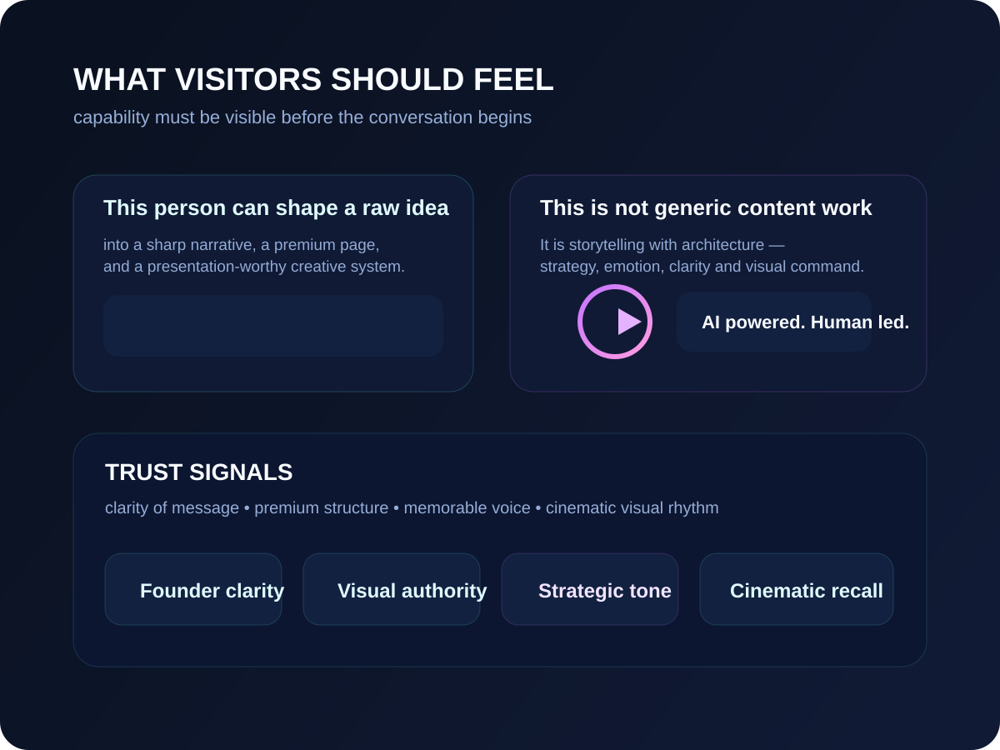
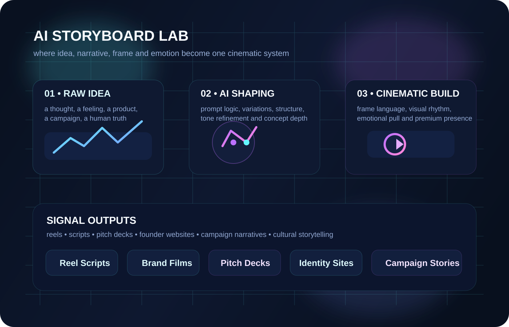
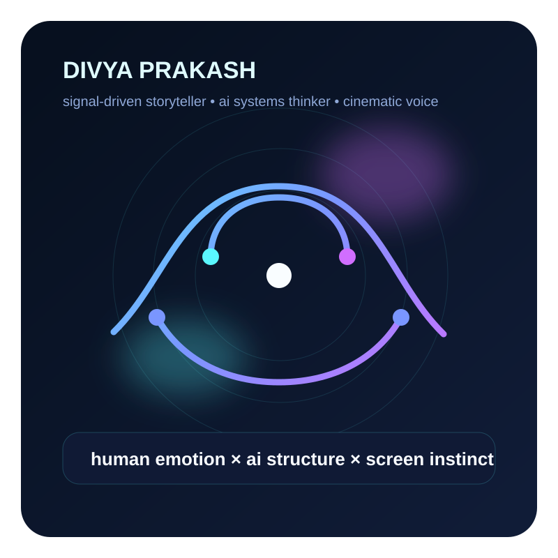

Signal 01
0
This is a serious creative mind
The messaging, structure, and visuals are designed to show authority — not hobby-level content creation.
I am Divya Prakash, founder of CinematikInk — an AI-powered creative content studio built for people who do not want generic output. I shape scripts, reels, founder websites, presentations, and story systems that feel premium, emotionally sharp, and strategically clear.

A strong identity website does not only explain services. It creates belief. These are the signals this website is designed to communicate within the first few seconds.
This brand is not positioned as an AI developer. It is positioned as a cinematic storytelling studio that uses AI to shape ideas faster, deeper, and more powerfully.

These are not listed as generic services. Each offer is positioned as a transformation — because what matters is not the file you receive, but the impression it creates.
Reel scripts, episodic arcs, concept notes, dialogue shaping, emotional hooks, and story systems that are built to sound human and feel cinematic.
Identity-led websites for founders, creators, institutions, and thought leaders who need strong first impression, visual command, and brand clarity.
Presentations that look sharp, read clearly, and move like a story — built for clients, institutions, broadcasters, NGOs, and collaborators.
Systems for repeatable storytelling across reels, social posts, campaigns, carousels, website sections, and branded communication.
Sharper language, stronger visual tone, and messaging that helps a person or institution look premium, distinct, and emotionally intelligent.
Prompt packs, internal content systems, structured templates, and repeatable studio processes that make quality more scalable.
This visual explains the method: begin with a raw idea, shape it with AI and narrative intelligence, build it cinematically, then deliver it as a polished public-facing asset.


“I do not use AI to replace creativity. I use it to sharpen storytelling, improve presentation, and build content that still feels human at its core.”
My edge is not that I know how to use tools. My edge is that I understand story, emotion, audience perception, presentation, and structured thinking together. That is why CinematikInk can make a page, a pitch, a script, or a creative concept feel more complete.

If you are looking for someone who can understand your idea, sharpen its language, shape its presentation, and make it feel emotionally stronger, CinematikInk is built for that exact purpose.